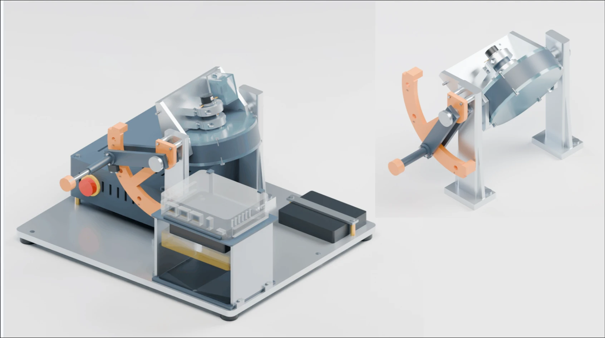

Overview
01 / 03Our experiment investigates how gravitational loading affects friction within a robotic actuator and joint. We aim to identify which components of the Stribeck friction model are most sensitive to changes in loading, supporting more accurate modeling and control of robots in space.
The proposed apparatus uses an adjustable flywheel assembly to compare joint behavior at different orientations. Motor current, shaft speed, orientation, and temperature measurements will support comparisons of breakaway torque, coast-down behavior, and fitted friction parameters between ground and microgravity conditions.
My work focuses on materials selection and CAD. The preliminary design review also outlines my planned role as the experiment operator, running test scripts during flight.
Apparatus design
02 / 03
Preliminary design review
03 / 03The October 29 presentation covers the experiment rationale, system requirements, hardware integration, flight operations, and expected results.
October 29 · 18 slides · Use the arrow keys to browse